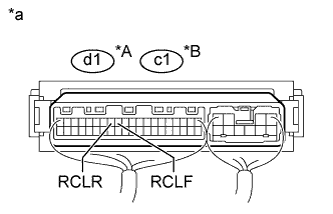
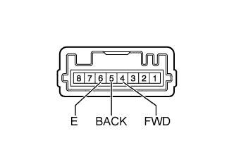

СИСТЕМА ЗАДНИХ СИДЕНИЙ С ЭЛЕКТРОПРИВОДОМ > Цепь переключателя электропривода заднего сиденья |
| 1.ПРОВЕРЬТЕ ЭБУ СКЛАДЫВАНИЯ СИДЕНЬЯ |
|  |
Снимите ЭБУ складывания сиденья, не отсоединяя разъемы (Нажмите здесь).
Измерьте напряжение в соответствии со значениями, приведенными в таблице.
| Контакты для подключения диагностического прибора | Условие | Заданные условия |
| d1-12 (RCLF) - масса | Всегда | 11 – 14 В |
| Переключатель электропривода левого заднего сиденья (сдвиг вперед) | Менее 1 В | |
| d1-13 (RCLR) - масса | Всегда | 11 – 14 В |
| Переключатель электропривода левого заднего сиденья (сдвиг назад) | Менее 1 В |
| Контакты для подключения диагностического прибора | Условие | Заданные условия |
| c1-12 (RCLF) - масса | Всегда | 11 – 14 В |
| Переключатель электропривода правого заднего сиденья (сдвиг вперед) | Менее 1 В | |
| c1-13 (RCLR) - масса | Всегда | 11 – 14 В |
| Переключатель электропривода правого заднего сиденья (сдвиг назад) | Менее 1 В |
| *A | Для левой стороны |
| *B | Для правой стороны |
| *a | Устройство с подсоединенным жгутом проводов (ЭБУ складывания сиденья) |
|
| ||||
| OK | ||
| ||
| 2.ПРОВЕРЬТЕ ПЕРЕКЛЮЧАТЕЛЬ ЭЛЕКТРОПРИВОДА ЗАДНЕГО СИДЕНЬЯ |
|  |
Снимите переключатель электропривода заднего сиденья (Нажмите здесь).
Измерьте сопротивление в соответствии со значениями, приведенными в таблице ниже.
| Контакты для подключения диагностического прибора | Условие | Заданные условия |
| 4 (FWD) - 6 (E) | Всегда | 10 кОм или более |
| Переключатель электропривода заднего сиденья "вперед" | Менее 1 Ом | |
| 5 (BACK) - 6 (E) | Всегда | 10 кОм или более |
| Переключатель электропривода заднего сиденья "назад" | Менее 1 Ом |
|
| ||||
| OK | |
| 3.ПРОВЕРЬТЕ ЖГУТ ПРОВОДОВ И РАЗЪЕМ (ЭБУ СКЛАДЫВАНИЯ СИДЕНЬЯ – ПЕРЕКЛЮЧАТЕЛЬ ЭЛЕКТРОПРИВОДА ЗАДНЕГО СИДЕНЬЯ) |
Отсоедините разъем d1*1 или c1*2 ЭБУ.
Отсоедините разъем R11*1 или Q10*2 выключателя.
Измерьте сопротивление в соответствии со значениями, приведенными в таблице ниже.
| Контакты для подключения диагностического прибора | Условие | Заданные условия |
| d1-12 (RCLF) - R11-4 (FWD) | Всегда | Менее 1 Ом |
| d1-12 (RCLF) - масса | Всегда | 10 кОм или более |
| d1-13 (RCLR) - R11-5 (BACK) | Всегда | Менее 1 Ом |
| d1-13 (RCLR) - масса | Всегда | 10 кОм или более |
| Контакты для подключения диагностического прибора | Условие | Заданные условия |
| c1-12 (RCLF) - Q10-4 (FWD) | Всегда | Менее 1 Ом |
| c1-12 (RCLF) - масса | Всегда | 10 кОм или более |
| c1-13 (RCLR) - Q10-5 (BACK) | Всегда | Менее 1 Ом |
| c1-13 (RCLR) - масса | Всегда | 10 кОм или более |
|
| ||||
| OK | ||
| ||